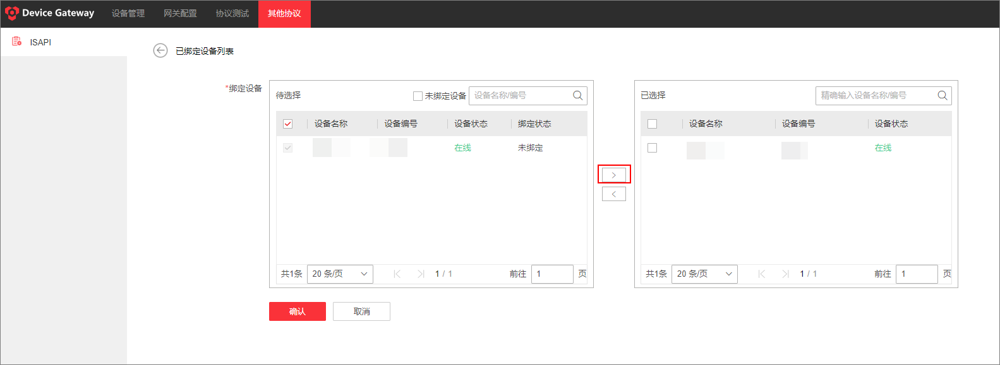

Device Gateway 和第三方平台之间通过ISAPI协议进行通信。为了确保正常通信，需要配置的协议参数与第三方平台配置保持一致。
为使用ISAPI的三方平台启用ISAPI协议，添加至 Device Gateway 的设备就可以与三方平台通信。Device Gateway 的ISAPI协议是默认不启用的。点击其他协议 > ISAPI。
为了使三方平台与ISUP5.0设备通信，需把设备与 Device Gateway 绑定。绑定后网关可以为设备分配端口号，这样设备就可以与三方平台通信。
最多可绑定200个设备。
